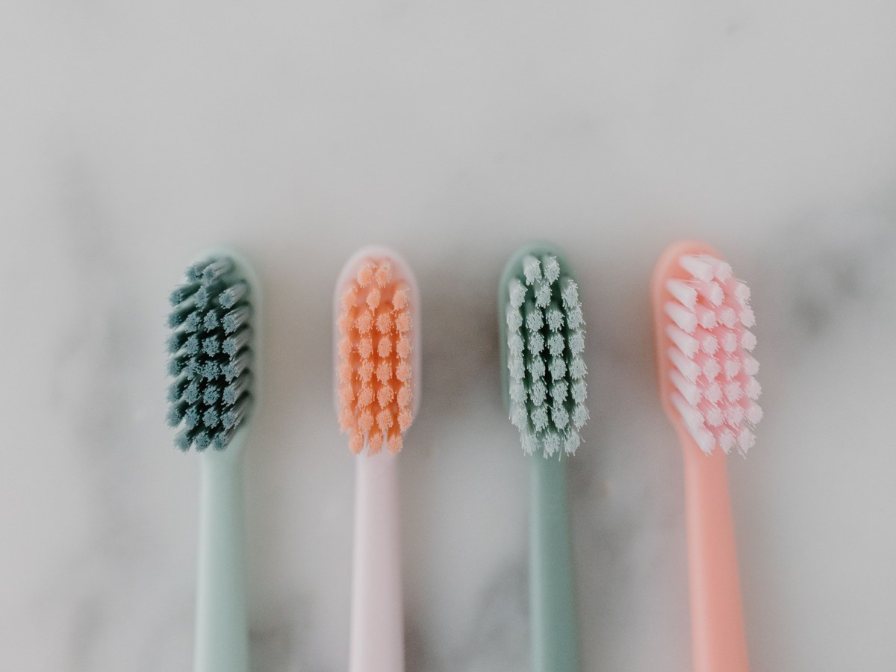
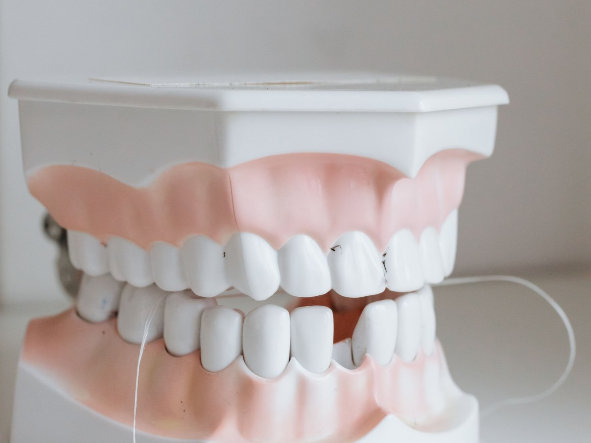
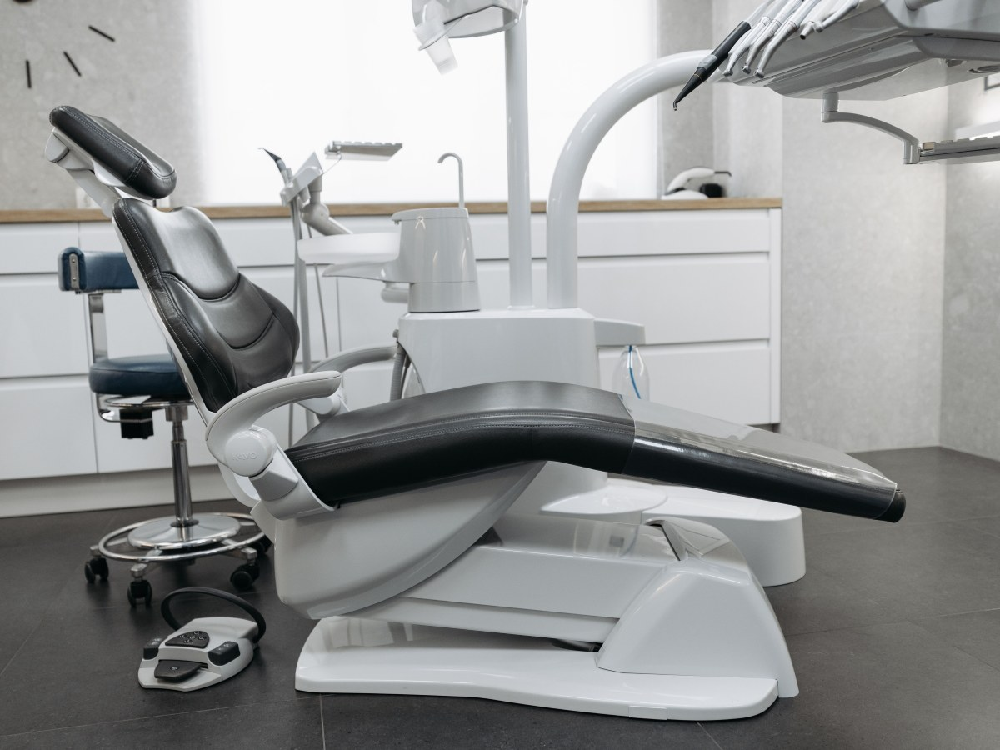
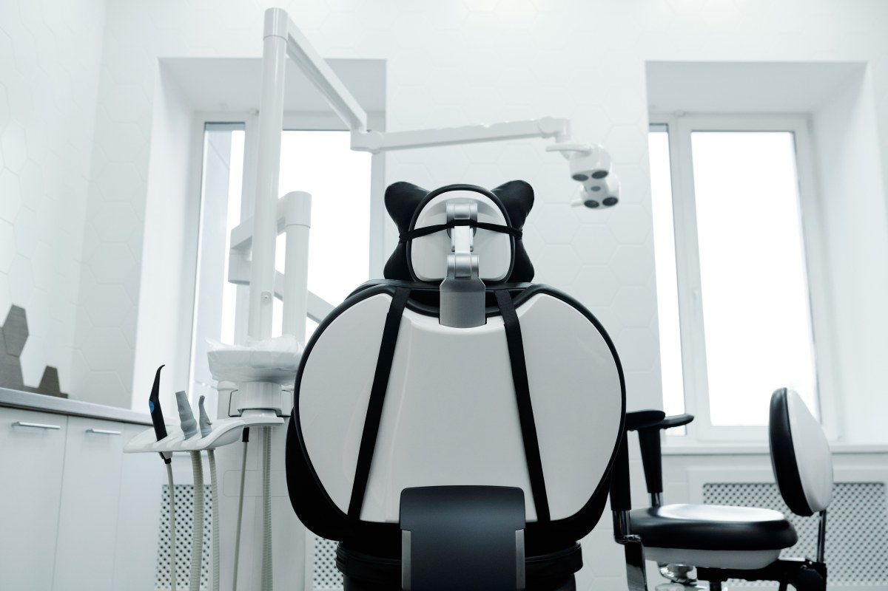
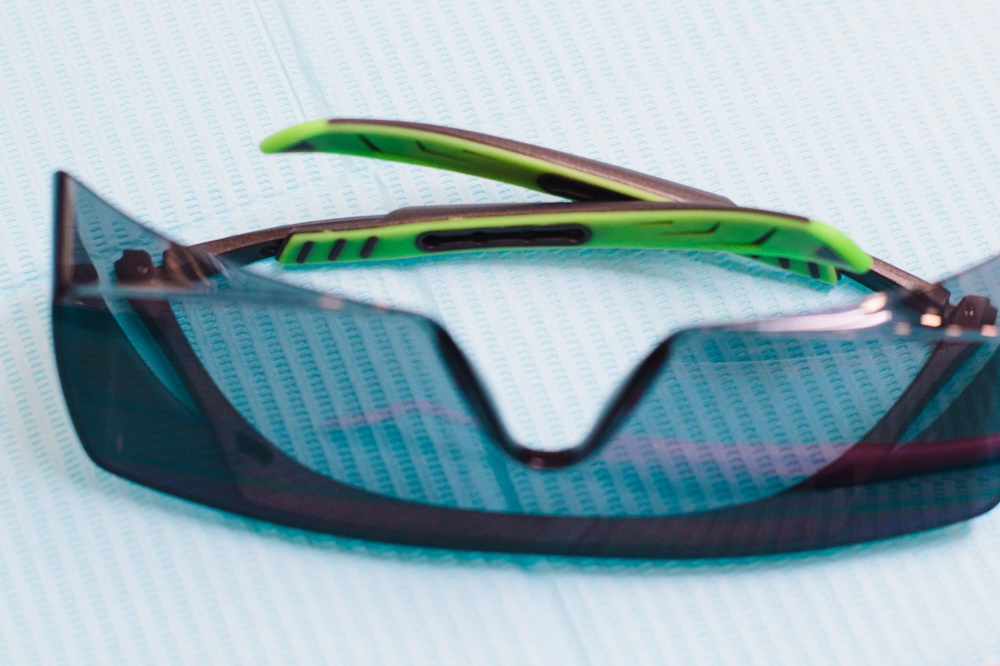

Clínica dental · Pucón
Nadie le pregunta al dentista cuánto le va a durar.
Y es la mitad de la cuenta.
- 112reseñas en Google
- 4,9de nota
- 2dentistas: adultos y niños
- 0páginas propias: su botón lleva a una agenda
La mitad de la cuenta que nadie pregunta
Cuánto dura cada cosa
Son rangos, no promesas: manda dónde está la pieza y cómo se cuida.
-

5 a 10 años
Tapadura
Menos en muelas y en quien aprieta de noche.
-

10 a 15 años
Corona
Lo que falla suele ser el diente de abajo.
-

15 años o más
Implante
Sólo si se cuida la encía.
-
1 a 3 años
Blanqueamiento
Café, té y vino lo acortan a la mitad.
No son una garantía: los estima el profesional.
El control anual es lo más barato y cambia todos los números.
Sin dramatizar y sin esconderlo
Si se deja para después
- Hoy
Una caries chica
Una visita: es cuando menos cuesta.
- Más adelante
Caries profunda
Empieza la sensibilidad al frío.
- Duele de noche
Llegó al nervio
Endodoncia y corona: cambia de categoría.
- Si se sigue
Se pierde la pieza
Reponer cuesta más que conservar.
No es un diagnóstico: cada boca es distinta.
El dolor que despierta de noche es un aviso tarde.
Mejor antes
Cuidar lo que dura
Del cepillo al control



Fotos de referencia: el box y el equipo los muestra la clínica.
Dónde estamos
Uruguay 325, Pucón
- Dirección
- Uruguay 325, Centro Médico Pucón
- Teléfono y WhatsApp
- 9 6163 7466
- Reseñas
- 112 en Google, nota 4,9
- Horario
- Falta el horario
Pida hora para el control anual: es lo que alarga todo lo demás.
Uruguay 325, Pucón Abrir en Google Maps
Para el dueño
Qué es real y qué falta
Lo verificado
El nombre, la dirección en el Centro Médico Pucón, el teléfono y las 112 reseñas con 4,9.
Lo de ejemplo
Los rangos de duración y la escalera: orientación general, a firmar por la clínica.
Lo que falta
El horario y las fotos del box y del equipo.